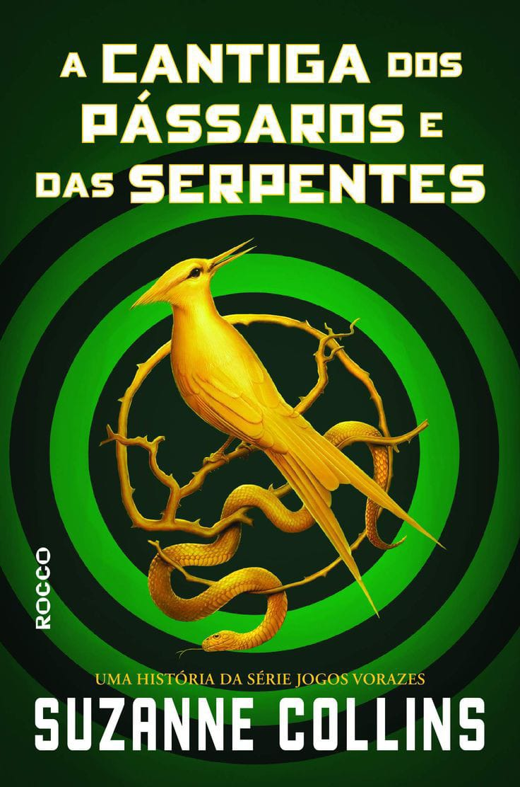
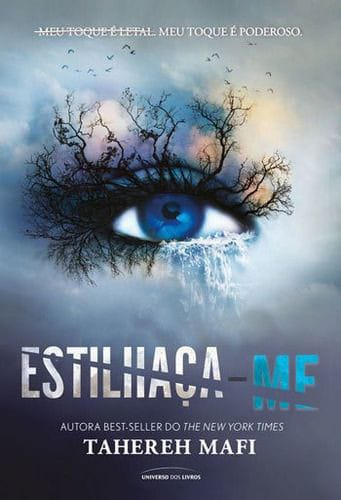

Bem-vindo ao LiteraryPoint✨, o seu ponto de encontro literário! Para todos aqueles que desejam explorar o vasto universo dos livros, independentemente do hábito de leitura, aqui é o lugar ideal para começar essa jornada incrível.
Descubra mais:
"Descubra mundos infinitos entre páginas e deixe-se envolver por histórias que alimentam a imaginação. Explore, mergulhe e viva além das palavras no nosso universo literário, onde cada livro é uma porta para aventuras inesquecíveis."
Corte de espinhos e rosas
Sarah J. Maas
De Sangue e cinzas
Jennifer L. Armentrout
O Príncipe Cruel
Holly Black
Princesa das cinzas
Laura Sebastian
Trono de vidro
Sarah J. Maas
A cinco Passos de você
Rachael Lippincott, Mikki Daughtry e Tobias Iaconis.
A Seleção
Kiera Cass
É assim que acaba
Collen Hoover
É assim que começa
Collen Hoover
O beijo da neve
Babi A. Sette

A cantiga dos pássaros e das serpentes
Suzanne Collins
A rainha vermelha
Victoria Aveyard
Battle Royale
Koushun Takami

Estilhaça-me
Tahereh Mafi
Jogos vorazes
Suzanne Collins
A Empregada
Freida McFadden
A garota do lago
Charlie Donlea
Assassinato no expresso oriente
Agatha Christie
Sherlock Holmes:Um estudo em vermelho
Arthur Conan Doyle
Verity
Collen Hoover
Ranking dos livros mais lidos:
"Descubra os tesouros literários do ano! Conheça os livros mais lidos de 2023 que encantaram leitores, revelando mundos fascinantes e narrativas inesquecíveis. Explore histórias que transcendem as páginas e deixam uma marca eterna na imaginação."
| Posição | Nome do livro | Autor (a) | Gênero |
|---|---|---|---|
| 1 | De Sangue e Cinzas | Jennifer L. Armentrout | Fantasia |
| 2 | Estilhaça-me | Tahereh Mafi | Distopia |
| 3 | É Assim Que Começa | Collen Hoover | Romance |
| 4 | A garota do lago | Charlie Donlea | Mistério |
Recomendações:
Eu e esse meu coração
Leah MacKenzie, de 17 anos, não tem coração. O que a mantém viva é um coração artificial
que ela carrega dentro de uma mochila.
Com seu tipo sanguíneo raro, um transplante é como um sonho distante. Conformada, ela tenta
se esquecer de que está com os dias contados, criando uma lista de “coisas para fazer antes
de morrer”.
De repente, Leah recebe uma segunda chance: há um coração disponível! O problema é quando
ela descobre que o doador é um garoto da sua escola – e que supostamente se matou!
Matt, o irmão gêmeo do doador, se recusa a acreditar que Eric se suicidou. Quando Leah o
procura, eles descobrem que ambos têm sonhos semelhantes que podem ter pistas do que
realmente aconteceu a Eric.
Enquanto tentam desvendar esse mistério, Matt e Leah se apaixonam e não querem correr o
risco de perder um ao outro. Mas nem a vida nem um coração transplantado vem com garantias.
Quem diria que viver exige mais coragem do que morrer?
Os cinco sobreviventes
Red Kenny e seus cinco melhores amigos decidiram alugar um trailer e pegar a estrada rumo a
uma viagem inesquecível na praia para comemorar o fim do ensino médio. Enquanto a maioria
dos adolescentes está pensando na faculdade, Red tem outras preocupações: órfã de mãe e com
o pai alcoólatra, ela precisa dar um jeito em sua vida. Mas ninguém imaginou que o grupo
jamais chegaria ao destino desejado.
De repente, no meio da noite, todos os pneus furam ao mesmo tempo e o veículo fica sem
gasolina. Presos no meio do nada e sem sinal de celular, não há como pedir ajuda. Quando
tiros começam a atingir o trailer, fica claro que foi tudo planejado. Os seis estão
encurralados por uma pessoa armada disposta a matá-los, a menos que deem o que ela quer: um
segredo.
Restam oito horas até o amanhecer. Para salvar a si mesmos, os amigos precisam descobrir
quem é o alvo do atirador escondido na escuridão e por quê. Aos poucos, verdades
inconfessáveis e turbulentas começam a vir à tona… mas alguém está mentindo. E isso vai
custar a vida de um deles.
Com uma narrativa ágil e assustadora, Os cinco sobreviventes traz uma trama cheia de
revelações, na qual nada é o que parece. O primeiro thriller de Holly Jackson fora do
universo da série best-seller Manual de assassinato para boas garotas promete deixar os fãs
tensos e sem fôlego até a última página.